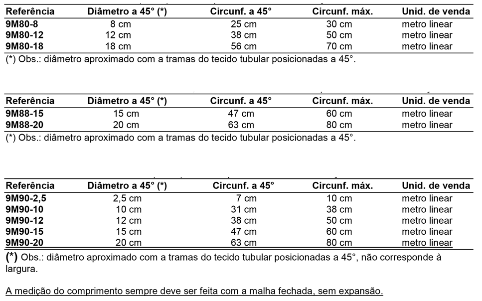

Malha tubular 100% fibra de vidro. Proporciona alta resistência mecânica e rigidez para laminação de próteses e órteses. Indicada para estruturas que exigem excelente relação resistência/peso.
Malha tubular híbrida com composição 50% fibra de vidro e 50% fibra de carbono. Combina as propriedades de ambas as fibras, oferecendo uma solução de custo-benefício otimizado para laminações de alta performance.
Malha tubular 100% fibra de carbono. Máxima rigidez e leveza para laminações de alto desempenho. Ideal para componentes protéticos que exigem a mais alta performance estrutural com o menor peso possível.
